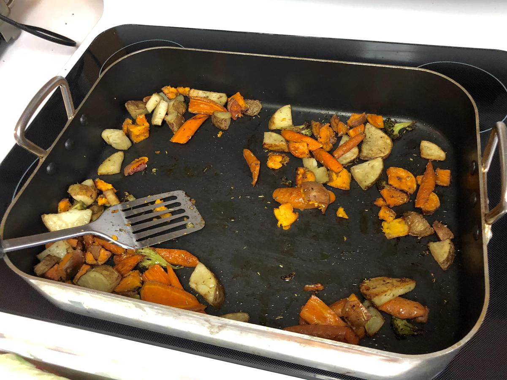

Personal rating: 5 / 5

Olive Oil
(Standard) Thyme, Rosemary, Garlic, Onion, and Salt and pepper
(Alternative) Paprika, Thyme, Garlic, and Onion
Potatoes
Sweet Potatoes
Carrots, cut diagonally
Bell Peppers
Red or Yellow Onions
Butternut or Yellow Squash
Broccoli
Mushrooms (note: put in a separate pan to account for liquid)
Zucchini
Set the oven to 425 (no need to wait for pre-heat)
Cut up the hardy the vegetables into roughly the same size. For example, cut potato-shaped vegetables in half twice, then into chunks.
Mix with oil and seasonings in a bowl. Spread out over baking sheets and/or roasting pan
Bake for 30 minutes, check and flip, then bake for an additional 30 min
Top with Feta crumbles, black pepper, olive oil or other sauce, etc.
Based on Mom's on Call
Toss the vegetables with olive oil, thyme, basil, and oregano
At 425F, bake the vegetables for 15 min, flip, then bake for another 10